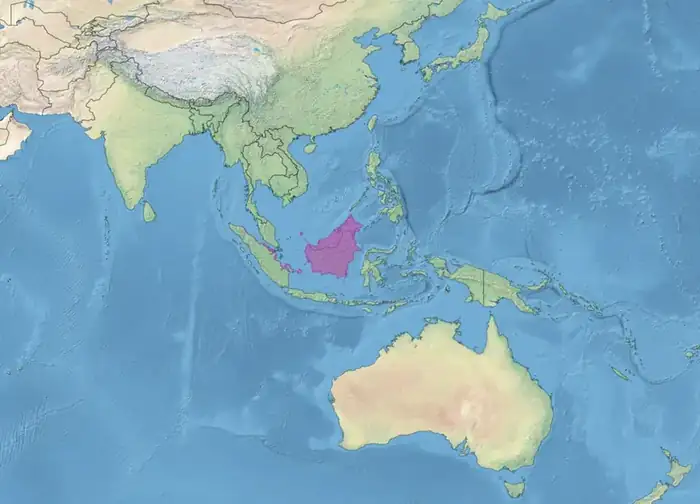

The land
Sundaland is the continental shelf of Southeast Asia — the Sunda Shelf — which was exposed as dry land during glacial lowstands, joining Sumatra, Java, Borneo and the Malay Peninsula into a single landmass about the size of Europe west of Russia. It was flooded as sea levels rose after the last glacial maximum.
Maps, diagrams and images


The debate
The land is not in dispute. The argument is about what it means: whether the drowned landscape is where major population movements and cultural developments occurred, and whether its archaeology can be recovered. Underwater survey in the region is difficult, expensive and in its infancy.
Some scholars have proposed that the flooding of Sundaland is the origin of flood myths across the region, which is plausible and untestable in the strong form.
Documented: the shelf, its extent and its flooding.
Contested: the cultural significance of the drowned land.
Underexplored: the underwater archaeology.
Plausible: a role in regional flood traditions.
The honest label: live debate.
Why it is in the archive
Because it is a real lost land whose archaeology is mostly inaccessible, which is the honest version of every sunken-civilisation story.
Open resources on this topic
- BookLarge-eyed Onthophagus species of Sundaland: a key and descriptions of five new species (Coleoptera: Scarabaei — ['Krikken, J', 'Huijbregts, J'] · 1987 (Internet Archive, free to read)
- BookA review of the Teinobasis of Sundaland, with the description of Teinobasis cryptica sp. nov. from Malaysia (O — Rory A. Dow · 2010 (Internet Archive, free to read)
- BookThe species-group of Vestalis amoena Selys, 1853, in Sundaland (Odonata, Calopterygidae) — M A Lieftinck · 1965 (Internet Archive, free to read)
- PapersOpen-access articles: DOAJ · PubMed Central · Internet Archive Scholar
- BooksPublic-domain and borrowable copies: Open Library · Project Gutenberg · Google Books
Cite this page
Momin, S. (2026). Sundaland. The Larger World Archive. https://drsamonline.github.io/LARGE_GLOBE/sundaland.htmlMomin, Sohil. “Sundaland.” The Larger World Archive, 2026, https://drsamonline.github.io/LARGE_GLOBE/sundaland.html.Momin, Sohil. “Sundaland.” The Larger World Archive, 2026. https://drsamonline.github.io/LARGE_GLOBE/sundaland.html.@misc{sundaland2026sundaland,
author = {Momin, Sohil},
title = {Sundaland},
year = {2026},
howpublished = {The Larger World Archive},
url = {https://drsamonline.github.io/LARGE_GLOBE/sundaland.html},
note = {Last reviewed 20 November 2026}
}Last reviewed 20 November 2026 · Corrections policy · this page is not peer reviewed
Sources for this page
- Wikipedia, “Sunda Shelf” — the regionen.wikipedia.org
- Wikipedia, “Sundaland” — the exposed landmassen.wikipedia.org
- Wikipedia, “Maritime archaeology” — the methoden.wikipedia.org
- Wikipedia, “Flood myth” — the traditionsen.wikipedia.org